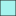

<!doctype html>
<html lang="en">
    <head>
        <meta charset="utf-8">
        <meta http-equiv="X-UA-Compatible" content="IE=edge">
        <meta name="viewport" content="initial-scale=1,user-scalable=no,maximum-scale=1,width=device-width">
        <meta name="mobile-web-app-capable" content="yes">
        <meta name="apple-mobile-web-app-capable" content="yes">
        <link rel="stylesheet" href="css/leaflet.css">
        <link rel="stylesheet" href="css/L.Control.Layers.Tree.css">
        <link rel="stylesheet" href="css/L.Control.Locate.min.css">
        <link rel="stylesheet" href="css/qgis2web.css">
        <link rel="stylesheet" href="css/fontawesome-all.min.css">
        <link rel="stylesheet" href="css/leaflet.photon.css">
        <link rel="stylesheet" href="css/leaflet.draw.css">
        <style>
        html, body, #map {
            width: 100%;
            height: 100%;
            padding: 0;
            margin: 0;
        }
        /* Google Maps style live-location dot */
        .gps-dot-pulse {
            animation: gps-dot-pulse-anim 1.8s ease-out infinite;
            transform-origin: center;
            transform-box: fill-box;
        }
        @keyframes gps-dot-pulse-anim {
            0%   { filter: drop-shadow(0 0 0px rgba(66,133,244,0.7)); }
            70%  { filter: drop-shadow(0 0 12px rgba(66,133,244,0)); }
            100% { filter: drop-shadow(0 0 0px rgba(66,133,244,0)); }
        }
        /* Google Maps style "my location" button */
        .leaflet-control-locate.leaflet-bar {
            border: none;
            box-shadow: 0 1px 4px rgba(0,0,0,0.35);
            border-radius: 50%;
            overflow: hidden;
        }
        .leaflet-control-locate a {
            width: 40px;
            height: 40px;
            line-height: 40px;
            text-align: center;
            border-radius: 50%;
            background-color: #ffffff;
            color: #555555;
        }
        .leaflet-control-locate a:hover {
            background-color: #f4f4f4;
        }
        .leaflet-control-locate.active a {
            color: #4285F4;
        }
        .leaflet-control-locate.active.following a {
            color: #FC8428;
        }
        .kml-io-control a {
            width: 30px;
            height: 30px;
            line-height: 30px;
            text-align: center;
            font-size: 16px;
        }
        </style>
        <title></title>
    </head>
    <body>
        <div id="map">
        </div>
        <script src="js/qgis2web_expressions.js"></script>
        <script src="js/leaflet.js"></script>
        <script src="js/L.Control.Layers.Tree.min.js"></script>
        <script src="js/L.Control.Locate.min.js"></script>
        <script src="js/leaflet.rotatedMarker.js"></script>
        <script src="js/leaflet.pattern.js"></script>
        <script src="js/leaflet-hash.js"></script>
        <script src="js/Autolinker.min.js"></script>
        <script src="js/rbush.min.js"></script>
        <script src="js/labelgun.min.js"></script>
        <script src="js/labels.js"></script>
        <script src="js/leaflet.photon.js"></script>
        <script src="js/leaflet.draw.js"></script>
        <script src="js/leaflet.geometryutil.js"></script>
        <script src="js/leaflet.snap.js"></script>
        <script src="js/togeojson.js"></script>
        <script src="js/tokml.js"></script>
        <script src="data/House_0.js"></script>
        <script src="data/Boundary_3.js"></script>
        <script src="data/River_4.js"></script>
        <script src="data/Municipality1_5.js"></script>
        <script>
        var map = L.map('map', {
            zoomControl:false, maxZoom:28, minZoom:1
        }).fitBounds([[11.2501183734,76.2007218964],[11.3169706681,76.2786324461]]);
        var hash = new L.Hash(map);
        map.attributionControl.setPrefix('<a href="https://github.com/tomchadwin/qgis2web" target="_blank">qgis2web</a> &middot; <a href="https://leafletjs.com" title="A JS library for interactive maps">Leaflet</a> &middot; <a href="https://qgis.org">QGIS</a>');
        var autolinker = new Autolinker({truncate: {length: 30, location: 'smart'}});
        // remove popup's row if "visible-with-data"
        function removeEmptyRowsFromPopupContent(content, feature) {
         var tempDiv = document.createElement('div');
         tempDiv.innerHTML = content;
         var rows = tempDiv.querySelectorAll('tr');
         for (var i = 0; i < rows.length; i++) {
             var td = rows[i].querySelector('td.visible-with-data');
             var key = td ? td.id : '';
             if (td && td.classList.contains('visible-with-data') && feature.properties[key] == null) {
                 rows[i].parentNode.removeChild(rows[i]);
             }
         }
         return tempDiv.innerHTML;
        }
        // add class to format popup if it contains media
		function addClassToPopupIfMedia(content, popup) {
			var tempDiv = document.createElement('div');
			tempDiv.innerHTML = content;
			if (tempDiv.querySelector('td img')) {
				popup._contentNode.classList.add('media');
					// Delay to force the redraw
					setTimeout(function() {
						popup.update();
					}, 10);
			} else {
				popup._contentNode.classList.remove('media');
			}
		}
        var zoomControl = L.control.zoom({
            position: 'topleft'
        }).addTo(map);
        // Custom marker so the live-location dot looks like Google Maps' blue dot (with pulse)
        var GoogleStyleLocationMarker = L.CircleMarker.extend({
            onAdd: function(map) {
                L.CircleMarker.prototype.onAdd.call(this, map);
                if (this._path) {
                    this._path.classList.add('gps-dot-pulse');
                }
            }
        });
        var locateControl = L.control.locate({
            position: 'topright',
            icon: 'fa fa-location-arrow',
            iconLoading: 'fa fa-spinner fa-spin',
            setView: 'untilPanOrZoom',
            keepCurrentZoomLevel: false,
            flyTo: true,
            drawCircle: true,
            drawMarker: true,
            markerClass: GoogleStyleLocationMarker,
            circleStyle: {
                color: '#4285F4',
                fillColor: '#4285F4',
                fillOpacity: 0.15,
                weight: 1,
                opacity: 0.5
            },
            markerStyle: {
                color: '#ffffff',
                fillColor: '#4285F4',
                fillOpacity: 1,
                weight: 3,
                opacity: 1,
                radius: 8
            },
            locateOptions: {
                maxZoom: 18,
                enableHighAccuracy: true,
                maximumAge: 0,
                timeout: 27000,
                watch: true
            }
        }).addTo(map);
        // Live GPS on by default
        map.whenReady(function() {
            locateControl.start();
        });
        var bounds_group = new L.featureGroup([]);
        function setBounds() {
        }
        function pop_House_0(feature, layer) {
            var popupContent = '<table>\
                    <tr>\
                        <th scope="row">name</th>\
                        <td>' + (feature.properties['name'] !== null ? autolinker.link(String(feature.properties['name']).replace(/'/g, '\'').toLocaleString()) : '') + '</td>\
                    </tr>\
                    <tr>\
                        <td colspan="2">' + (feature.properties['osm_id'] !== null ? autolinker.link(String(feature.properties['osm_id']).replace(/'/g, '\'').toLocaleString()) : '') + '</td>\
                    </tr>\
                    <tr>\
                        <td colspan="2">' + (feature.properties['osm_type'] !== null ? autolinker.link(String(feature.properties['osm_type']).replace(/'/g, '\'').toLocaleString()) : '') + '</td>\
                    </tr>\
                </table>';
            var content = removeEmptyRowsFromPopupContent(popupContent, feature);
			layer.on('popupopen', function(e) {
				addClassToPopupIfMedia(content, e.popup);
			});
			layer.bindPopup(content, { maxHeight: 400 });
        }

        function style_House_0_0() {
            return {
                pane: 'pane_House_0',
                opacity: 1,
                color: 'rgba(35,35,35,1.0)',
                dashArray: '',
                lineCap: 'butt',
                lineJoin: 'miter',
                weight: 1.0, 
                fill: true,
                fillOpacity: 1,
                fillColor: 'rgba(232,113,141,1.0)',
                interactive: true,
            }
        }
        map.createPane('pane_House_0');
        map.getPane('pane_House_0').style.zIndex = 400;
        map.getPane('pane_House_0').style['mix-blend-mode'] = 'normal';
        var layer_House_0 = new L.geoJson(json_House_0, {
            attribution: '',
            interactive: true,
            dataVar: 'json_House_0',
            layerName: 'layer_House_0',
            pane: 'pane_House_0',
            onEachFeature: pop_House_0,
            style: style_House_0_0,
        });
        bounds_group.addLayer(layer_House_0);
        map.addLayer(layer_House_0);
        map.createPane('pane_GoogleHybrid_1');
        map.getPane('pane_GoogleHybrid_1').style.zIndex = 401;
        var layer_GoogleHybrid_1 = L.tileLayer('https://mt1.google.com/vt/lyrs=y&x={x}&y={y}&z={z}', {
            pane: 'pane_GoogleHybrid_1',
            opacity: 1.0,
            attribution: '<a href="https://www.google.at/permissions/geoguidelines/attr-guide.html">Map data ©2015 Google</a>',
            minZoom: 1,
            maxZoom: 28,
            minNativeZoom: 0,
            maxNativeZoom: 20
        });
        layer_GoogleHybrid_1;
        map.createPane('pane_GoogleRoad_2');
        map.getPane('pane_GoogleRoad_2').style.zIndex = 402;
        var layer_GoogleRoad_2 = L.tileLayer('https://mt1.google.com/vt/lyrs=m&x={x}&y={y}&z={z}', {
            pane: 'pane_GoogleRoad_2',
            opacity: 1.0,
            attribution: '<a href="https://www.google.at/permissions/geoguidelines/attr-guide.html">Map data ©2015 Google</a>',
            minZoom: 1,
            maxZoom: 28,
            minNativeZoom: 0,
            maxNativeZoom: 20
        });
        layer_GoogleRoad_2;
        map.addLayer(layer_GoogleRoad_2);
        function pop_Boundary_3(feature, layer) {
            var popupContent = '<table>\
                    <tr>\
                        <td colspan="2">' + (feature.properties['id'] !== null ? autolinker.link(String(feature.properties['id']).replace(/'/g, '\'').toLocaleString()) : '') + '</td>\
                    </tr>\
                </table>';
            var content = removeEmptyRowsFromPopupContent(popupContent, feature);
			layer.on('popupopen', function(e) {
				addClassToPopupIfMedia(content, e.popup);
			});
			layer.bindPopup(content, { maxHeight: 400 });
        }

        function style_Boundary_3_0() {
            return {
                pane: 'pane_Boundary_3',
                opacity: 1,
                color: 'rgba(233,38,38,1.0)',
                dashArray: '',
                lineCap: 'square',
                lineJoin: 'bevel',
                weight: 3.0,
                fillOpacity: 0,
                interactive: false,
            }
        }
        map.createPane('pane_Boundary_3');
        map.getPane('pane_Boundary_3').style.zIndex = 403;
        map.getPane('pane_Boundary_3').style['mix-blend-mode'] = 'normal';
        var layer_Boundary_3 = new L.geoJson(json_Boundary_3, {
            attribution: '',
            interactive: false,
            dataVar: 'json_Boundary_3',
            layerName: 'layer_Boundary_3',
            pane: 'pane_Boundary_3',
            onEachFeature: pop_Boundary_3,
            style: style_Boundary_3_0,
        });
        bounds_group.addLayer(layer_Boundary_3);
        function pop_River_4(feature, layer) {
            var popupContent = '<table>\
                    <tr>\
                        <td colspan="2">' + (feature.properties['full_id'] !== null ? autolinker.link(String(feature.properties['full_id']).replace(/'/g, '\'').toLocaleString()) : '') + '</td>\
                    </tr>\
                    <tr>\
                        <td colspan="2">' + (feature.properties['osm_id'] !== null ? autolinker.link(String(feature.properties['osm_id']).replace(/'/g, '\'').toLocaleString()) : '') + '</td>\
                    </tr>\
                    <tr>\
                        <td colspan="2">' + (feature.properties['osm_type'] !== null ? autolinker.link(String(feature.properties['osm_type']).replace(/'/g, '\'').toLocaleString()) : '') + '</td>\
                    </tr>\
                    <tr>\
                        <td colspan="2">' + (feature.properties['natural'] !== null ? autolinker.link(String(feature.properties['natural']).replace(/'/g, '\'').toLocaleString()) : '') + '</td>\
                    </tr>\
                    <tr>\
                        <td colspan="2">' + (feature.properties['name'] !== null ? autolinker.link(String(feature.properties['name']).replace(/'/g, '\'').toLocaleString()) : '') + '</td>\
                    </tr>\
                </table>';
            var content = removeEmptyRowsFromPopupContent(popupContent, feature);
			layer.on('popupopen', function(e) {
				addClassToPopupIfMedia(content, e.popup);
			});
			layer.bindPopup(content, { maxHeight: 400 });
        }

        function style_River_4_0() {
            return {
                pane: 'pane_River_4',
                opacity: 1,
                color: 'rgba(35,35,35,1.0)',
                dashArray: '',
                lineCap: 'butt',
                lineJoin: 'miter',
                weight: 1.0, 
                fill: true,
                fillOpacity: 1,
                fillColor: 'rgba(166,243,238,1.0)',
                interactive: false,
            }
        }
        map.createPane('pane_River_4');
        map.getPane('pane_River_4').style.zIndex = 404;
        map.getPane('pane_River_4').style['mix-blend-mode'] = 'normal';
        var layer_River_4 = new L.geoJson(json_River_4, {
            attribution: '',
            interactive: false,
            dataVar: 'json_River_4',
            layerName: 'layer_River_4',
            pane: 'pane_River_4',
            onEachFeature: pop_River_4,
            style: style_River_4_0,
        });
        bounds_group.addLayer(layer_River_4);
        function pop_Municipality1_5(feature, layer) {
            var popupContent = '<table>\
                    <tr>\
                        <td colspan="2">' + (feature.properties['gml_id'] !== null ? autolinker.link(String(feature.properties['gml_id']).replace(/'/g, '\'').toLocaleString()) : '') + '</td>\
                    </tr>\
                    <tr>\
                        <td colspan="2">' + (feature.properties['name'] !== null ? autolinker.link(String(feature.properties['name']).replace(/'/g, '\'').toLocaleString()) : '') + '</td>\
                    </tr>\
                    <tr>\
                        <td class="visible-with-data" id="Ward_Name" colspan="2"><strong>Ward_Name</strong><br />' + (feature.properties['Ward_Name'] !== null ? autolinker.link(String(feature.properties['Ward_Name']).replace(/'/g, '\'').toLocaleString()) : '') + '</td>\
                    </tr>\
                    <tr>\
                        <td colspan="2">' + (feature.properties['Ward_No'] !== null ? autolinker.link(String(feature.properties['Ward_No']).replace(/'/g, '\'').toLocaleString()) : '') + '</td>\
                    </tr>\
                </table>';
            var content = removeEmptyRowsFromPopupContent(popupContent, feature);
			layer.on('popupopen', function(e) {
				addClassToPopupIfMedia(content, e.popup);
			});
			layer.bindPopup(content, { maxHeight: 400 });
        }

        // Ward tirichariyan vyatyastha niram (20% transparency fill)
        var wardColorPalette = ['#e6194b', '#3cb44b', '#ffe119', '#4363d8', '#f58231', '#911eb4', '#46f0f0', '#f032e6', '#bcf60c', '#fabebe', '#008080', '#e6beff', '#9a6324', '#fffac8', '#800000', '#aaffc3', '#808000', '#ffd8b1', '#000075', '#808080', '#42d4f4', '#f4a442', '#a442f4', '#42f489', '#f44272'];
        var wardColorMap = {};
        var wardColorIndex = 0;
        function getWardColor(wardName) {
            var key = wardName || 'unknown';
            if (!wardColorMap.hasOwnProperty(key)) {
                wardColorMap[key] = wardColorPalette[wardColorIndex % wardColorPalette.length];
                wardColorIndex++;
            }
            return wardColorMap[key];
        }
        var wardBoundaryColor = '#FFD700';
        var wardBoundaryColorApplied = false;
        function style_Municipality1_5_0(feature) {
            var wardColor = getWardColor(feature && feature.properties ? feature.properties['Ward_Name'] : null);
            return {
                pane: 'pane_Municipality1_5',
                opacity: 1,
                color: wardBoundaryColor,
                dashArray: '',
                lineCap: 'butt',
                lineJoin: 'miter',
                weight: 3.5, 
                fillColor: wardColor,
                fillOpacity: 0.05,
                interactive: true,
            }
        }
        map.createPane('pane_Municipality1_5');
        map.getPane('pane_Municipality1_5').style.zIndex = 405;
        map.getPane('pane_Municipality1_5').style['mix-blend-mode'] = 'normal';
        var layer_Municipality1_5 = new L.geoJson(json_Municipality1_5, {
            attribution: '',
            interactive: true,
            dataVar: 'json_Municipality1_5',
            layerName: 'layer_Municipality1_5',
            pane: 'pane_Municipality1_5',
            onEachFeature: pop_Municipality1_5,
            style: style_Municipality1_5_0,
        });
        bounds_group.addLayer(layer_Municipality1_5);
        map.addLayer(layer_Municipality1_5);
        const url = {"Nominatim": "https://nominatim.openstreetmap.org/search?format=geojson&addressdetails=1&",
        "BAN": "https://api-adresse.data.gouv.fr/search/?"}
        var photonControl = L.control.photon({
            url: url["Nominatim"],
            feedbackLabel: '',
            position: 'topleft',
            includePosition: true,
            initial: true,
            // resultsHandler: myHandler,
        }).addTo(map);
        photonControl._container.childNodes[0].style.borderRadius="10px"
        // Create a variable to store the geoJSON data
        var x = null;
        // Create a variable to store the marker
        var marker = null;
        // Add an event listener to the Photon control to create a marker from the returned geoJSON data
        var z = null;
        photonControl.on('selected', function(e) {
            console.log(photonControl.search.resultsContainer);
            if (x != null) {
                map.removeLayer(obj3.marker);
                map.removeLayer(x);
            }
            obj2.gcd = e.choice;
            x = L.geoJSON(obj2.gcd).addTo(map);
            var label = typeof obj2.gcd.properties.label === 'undefined' ? obj2.gcd.properties.display_name : obj2.gcd.properties.label;
            obj3.marker = L.marker(x.getLayers()[0].getLatLng()).bindPopup(label).addTo(map);
            map.setView(x.getLayers()[0].getLatLng(), 17);
            z = typeof e.choice.properties.label === 'undefined'? e.choice.properties.display_name : e.choice.properties.label;
            console.log(e);
            e.target.input.value = z;
        });
        var search = document.getElementsByClassName("leaflet-photon leaflet-control")[0];
        search.classList.add("leaflet-control-search")
        search.style.display = "flex";
        search.style.backgroundColor="rgba(255,255,255,0.5)" 

        // Créer le nouvel élément bouton
        var button = document.createElement("div");
        button.id = "gcd-button-control";
        button.className = "gcd-gl-btn fa fa-search search-button";

        // Ajouter le bouton à l'élément parent
        search.insertBefore(button, search.firstChild);
        last = search.lastChild;
        last.style.display = "none";
        button.addEventListener("click", function (e) {
            if (last.style.display === "none") {
                last.style.display = "block";
            } else {
                last.style.display = "none";
            }
        });
        var overlaysTree = [
            {label: ' Municipality1', layer: layer_Municipality1_5},
            {label: ' River', layer: layer_River_4},
            {label: ' Boundary', layer: layer_Boundary_3},
            {label: "Google Road", layer: layer_GoogleRoad_2, radioGroup: 'bm' },
            {label: "Google Hybrid", layer: layer_GoogleHybrid_1, radioGroup: 'bm' },
            {label: ' House', layer: layer_House_0},]
        var lay = L.control.layers.tree(null, overlaysTree,{
            //namedToggle: true,
            //selectorBack: false,
            //closedSymbol: '&#8862; &#x1f5c0;',
            //openedSymbol: '&#8863; &#x1f5c1;',
            //collapseAll: 'Collapse all',
            //expandAll: 'Expand all',
            collapsed: true,
            position: 'topright',
        });
        lay.addTo(map);

        // Ward boundary colour: gold on Google Hybrid (satellite), blue on Google Road
        function updateWardBoundaryColor() {
            var newColor = wardBoundaryColor;
            if (map.hasLayer(layer_GoogleRoad_2)) {
                newColor = '#1E88FF';
            } else if (map.hasLayer(layer_GoogleHybrid_1)) {
                newColor = '#FFD700';
            }
            if (newColor !== wardBoundaryColor || !wardBoundaryColorApplied) {
                wardBoundaryColor = newColor;
                wardBoundaryColorApplied = true;
                if (layer_Municipality1_5) {
                    layer_Municipality1_5.setStyle(style_Municipality1_5_0);
                }
            }
        }
        map.on('baselayerchange layeradd layerremove', updateWardBoundaryColor);
        updateWardBoundaryColor();

        // ---- Drawing tools ----
        var drawnItems = new L.FeatureGroup();
        map.addLayer(drawnItems);

        // Magnetic snap: puthiya drawing existing layers-inte vertices/lines-il "kuduthu" varakkan
        var snapGuideLayers = [layer_House_0, layer_River_4, layer_Boundary_3, layer_Municipality1_5, drawnItems];

        var drawControl = new L.Control.Draw({
            position: 'topleft',
            draw: {
                polygon: { shapeOptions: { color: '#e6851a', weight: 3 }, guideLayers: snapGuideLayers, snapDistance: 20 },
                polyline: { shapeOptions: { color: '#e6851a', weight: 3 }, guideLayers: snapGuideLayers, snapDistance: 20 },
                rectangle: { shapeOptions: { color: '#e6851a', weight: 3 }, guideLayers: snapGuideLayers, snapDistance: 20 },
                circle: { shapeOptions: { color: '#e6851a', weight: 3 } },
                circlemarker: false,
                marker: { guideLayers: snapGuideLayers, snapDistance: 20 }
            },
            edit: {
                featureGroup: drawnItems,
                remove: true
            }
        });
        map.addControl(drawControl);

        map.on(L.Draw.Event.CREATED, function (e) {
            drawnItems.addLayer(e.layer);
        });

        // ---- KML upload control ----
        var KmlUploadControl = L.Control.extend({
            options: { position: 'bottomleft' },
            onAdd: function() {
                var container = L.DomUtil.create('div', 'leaflet-bar leaflet-control kml-io-control');
                var uploadLink = L.DomUtil.create('a', '', container);
                uploadLink.href = '#';
                uploadLink.title = 'KML Upload cheyyuka';
                uploadLink.innerHTML = '<i class="fas fa-upload"></i>';

                var fileInput = L.DomUtil.create('input', '', container);
                fileInput.type = 'file';
                fileInput.accept = '.kml';
                fileInput.style.display = 'none';

                L.DomEvent.on(uploadLink, 'click', function(e) {
                    L.DomEvent.preventDefault(e);
                    L.DomEvent.stopPropagation(e);
                    fileInput.click();
                });

                L.DomEvent.on(fileInput, 'change', function(e) {
                    var file = e.target.files[0];
                    if (!file) { return; }
                    var reader = new FileReader();
                    reader.onload = function(evt) {
                        try {
                            var kmlDom = (new DOMParser()).parseFromString(evt.target.result, 'text/xml');
                            var geojson = toGeoJSON.kml(kmlDom);
                            var kmlLayer = L.geoJSON(geojson, {
                                style: { color: '#136AEC', weight: 3 },
                                pointToLayer: function(feature, latlng) {
                                    return L.marker(latlng);
                                },
                                onEachFeature: function(feature, layer) {
                                    drawnItems.addLayer(layer);
                                }
                            });
                            if (kmlLayer.getBounds().isValid()) {
                                map.fitBounds(kmlLayer.getBounds());
                            }
                        } catch (err) {
                            alert('KML file read cheyyan pattiyilla. Sheriyaya KML file aano ennu nokkuka.');
                            console.error(err);
                        }
                    };
                    reader.readAsText(file);
                    fileInput.value = '';
                });

                L.DomEvent.disableClickPropagation(container);
                return container;
            }
        });
        map.addControl(new KmlUploadControl());

        // ---- KML download control ----
        var KmlDownloadControl = L.Control.extend({
            options: { position: 'bottomleft' },
            onAdd: function() {
                var container = L.DomUtil.create('div', 'leaflet-bar leaflet-control kml-io-control');
                var downloadLink = L.DomUtil.create('a', '', container);
                downloadLink.href = '#';
                downloadLink.title = 'Drawing KML aayi Download cheyyuka';
                downloadLink.innerHTML = '<i class="fas fa-download"></i>';

                L.DomEvent.on(downloadLink, 'click', function(e) {
                    L.DomEvent.preventDefault(e);
                    L.DomEvent.stopPropagation(e);
                    if (drawnItems.getLayers().length === 0) {
                        alert('Download cheyyan onnum draw cheythittilla.');
                        return;
                    }
                    var geojson = drawnItems.toGeoJSON();
                    var kmlText = tokml(geojson);
                    var blob = new Blob([kmlText], { type: 'application/vnd.google-earth.kml+xml' });
                    var url = URL.createObjectURL(blob);
                    var a = document.createElement('a');
                    a.href = url;
                    a.download = 'drawing_' + Date.now() + '.kml';
                    document.body.appendChild(a);
                    a.click();
                    document.body.removeChild(a);
                    setTimeout(function() { URL.revokeObjectURL(url); }, 1000);
                });

                L.DomEvent.disableClickPropagation(container);
                return container;
            }
        });
        map.addControl(new KmlDownloadControl());

        setBounds();
        var i = 0;
        layer_House_0.eachLayer(function(layer) {
            var context = {
                feature: layer.feature,
                variables: {}
            };
            layer.bindTooltip((layer.feature.properties['name'] !== null?String('<div style="color: #e92626; font-size: 10pt; font-weight: bold; font-family: \'Bodoni MT Condensed\', sans-serif;">' + layer.feature.properties['name']) + '</div>':''), {permanent: true, offset: [-0, -16], className: 'css_House_0'});
            labels.push(layer);
            totalMarkers += 1;
              layer.added = true;
              addLabel(layer, i);
              i++;
        });
        var i = 0;
        layer_River_4.eachLayer(function(layer) {
            var context = {
                feature: layer.feature,
                variables: {}
            };
            layer.bindTooltip((layer.feature.properties['name'] !== null?String('<div style="color: #323232; font-size: 10pt; font-family: \'Open Sans\', sans-serif;">' + layer.feature.properties['name']) + '</div>':''), {permanent: true, offset: [-0, -16], className: 'css_River_4'});
            labels.push(layer);
            totalMarkers += 1;
              layer.added = true;
              addLabel(layer, i);
              i++;
        });
        var i = 0;
        layer_Municipality1_5.eachLayer(function(layer) {
            var context = {
                feature: layer.feature,
                variables: {}
            };
            layer.bindTooltip((layer.feature.properties['Ward_Name'] !== null?String('<div style="color: #e31a1c; font-size: 10pt; font-weight: bold; font-family: \'Agency FB\', sans-serif;">' + layer.feature.properties['Ward_Name']) + '</div>':''), {permanent: true, offset: [-0, -16], className: 'css_Municipality1_5'});
            labels.push(layer);
            totalMarkers += 1;
              layer.added = true;
              addLabel(layer, i);
              i++;
        });
        resetLabels([layer_House_0,layer_River_4,layer_Municipality1_5]);
        map.on("zoomend", function(){
            resetLabels([layer_House_0,layer_River_4,layer_Municipality1_5]);
        });
        map.on("layeradd", function(){
            resetLabels([layer_House_0,layer_River_4,layer_Municipality1_5]);
        });
        map.on("layerremove", function(){
            resetLabels([layer_House_0,layer_River_4,layer_Municipality1_5]);
        });
        </script>
    </body>
</html>
